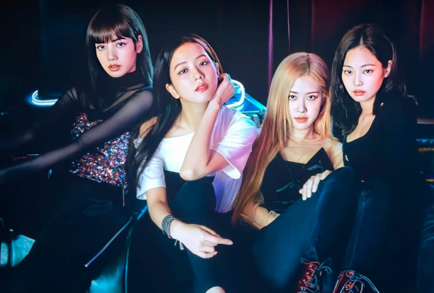

História Do Blackpink
O BLACKPINK é um grupo de K-pop feminino formado pela YG Entertainment em 2016. Ele é composto por 4 integrantes: Jisoo, Jennie, Rosé e Lisa.
em agosto de 2016 com os singles Whistle e Boombayah, com o single-álbum Square One. A expectativa em torno do debut do BLACKPINK era alta, já que o grupo era a aposta da YG após o sucesso do 2NE1, primeiro girl group da empresa, formado em 2009, e seu fim em 2017.
Sendo assim, foram abertas as audições não só na Ásia, como também em outras partes do mundo para buscar talentosas candidatas que pudessem fazer parte da agência. Segundo o documentário "BLACKPINK: Light Up the Sky", da Netflix, a ideia inicial da YG era criar um grupo com muitas integrantes e, por isso, um grande número de garotas foram aceitas com o decorrer dos anos para participarem dos treinamentos.
Formação do Grupo
Jennie foi a primeira a chegar na empresa, no ano de 2010. Na época, ela tinha apenas 14 anos, e voltava de um intercâmbio na Nova Zelândia, onde viveu sozinha por volta de 5 anos. Durante seus anos de trainee, chegou a fazer parcerias com alguns dos maiores nomes da YG, como a cantora Lee Hi e o rapper G-Dragon, do BIGBANG.
No ano seguinte, mais duas integrantes chegavam à empresa: Jisoo e Lisa. A primeira, na realidade, havia entrado na agência pois tinha o interesse em atuar, e passou logo de cara. Jisoo, com 15 anos, se tornou a mais velha entre as trainees ao lado de Jennie e, por este motivo, as duas logo se tornaram muito próximas desde o início.
Enquanto isso, Lisa já chegou fazendo história. Com apenas 13 anos, ela foi a primeira estrangeira a entrar na YG. Natural da Tailândia, a garota conseguiu vencer milhares de meninas em seu país natal, e se mudou para a Coreia sabendo apenas uma palavra em coreano. Na empresa, ela passou a ter aulas do idioma, onde Jisoo sempre a ajudou com as expressões, e passou a conversar bastante com Jennie, já que a mesma era a única que sabia falar inglês.
A última a chegar na agência foi Rosé, em 2012, aos 14 anos. Com os pais coreanos, a jovem nasceu na Nova Zelândia, mas viveu praticamente sua vida inteira na Austrália, onde fez sua audiência para a empresa. Após ser aprovada, se mudou para a Coreia do Sul e, ao chegar nos dormitórios, foi orientada a permanecer em um quarto com outras três garotas: Jisoo, Jennie e Lisa.
Debut, Monster Rookies e sucesso
Quatro anos depois de muito treinamento, em 2016, a YG Entertainment anunciou que, finalmente, debutaria o seu mais novo girlgroup: o BLACKPINK. Seus dois singles de lançamento foram "BOOMBAYAH" e "Whistle" onde, com a segunda música, tiveram sua primeira vitória em um programa musical coreano, se tornando o grupo mais rápido até o momento a atingir o feito, com apenas 13 dias desde o seu debut.
No mesmo ano, as meninas também lançaram outras duas músicas, "Stay" e "Playing With Fire", que também atingiram números impressionantes e ajudaram a garantir o apelido de “Monster Rookies”, dado pelo público e pela imprensa devido ao grandioso sucesso que o grupo fez logo em seu ano de estreia.
Com quatro músicas lançadas, sem contar com a versão acústica de “Whistle”, o Blackpink focou nas performances ao vivo, no lançamento das versões japonesas das canções, e na relação com os fãs, apelidados de Blink - junção de Black com Pink.
No entanto a expansão internacional, chegou em 2018 com "Ddu-Du Ddu-Du" tendo o Mv mais visto do grupo. O sucesso foi tão grande que gerou para as garotas um contrato com a Interscope Records para agenciar suas carreiras de modo internacional. Atualmente, o clipe da música já ultrapassou a impressionante marca de 2,1 bilhão de views.
Ressaltando que O BLACKPINK in Your Area, de 2018, é uma compilação de todas as músicas lançadas pelo grupo na época, incluindo o EP em japonês autointitulado e o mini-álbum coreano Square Up.
Após o estouro, o crescimento do grupo se torna cada vez maior a cada dia. Entre os seus feitos, estão o grupo feminino mais rápido a atingir 100 milhões de visualizações no YouTube, o primeiro grupo de k-pop a performar no festival de música Coachella, o girlgroup com mais streamings no Spotify, o ato feminino coreano de maior sucesso na Billboard Hot 100, e muito mais.